The editor
Instrument 01 · Live
A shared workspace where people and agents write together. Every edit is attributed; every change can be reviewed, kept, or reversed.
Sundial is a research lab studying how people and models write together. We build the surface where the collaboration happens, and study how a model learns when to act, when to ask, and when to leave the text alone.
A shared workspace where people and agents write together. Every edit is attributed; every change can be reviewed, kept, or reversed.
A fine-grained record of the work itself: every edit, message, tool call, and review, captured as it happens. A system of record for human-agent work.
Surface
What is the best surface for a person to think, decide and review once machines do most of the drafting?
Judgment
Can a model learn a person's judgment from the collaboration itself, rather than from anything they sit down and write out?
Many Hands
How do several people and several agents share one document without anyone losing track of who did what?
Trace
Every edit, every comment, every acceptance and every reversal is a trace of judgment. We keep all of them.
Review
If a machine wrote most of it, the reading matters more than the writing. Every change stays reviewable.
Series
The editor is the first instrument, not the last. The plinths beside it are waiting.

Personalization · RL · Interfaces
We are a small team hiring researchers and engineers in personalization, reinforcement learning, and interfaces. We read the work before the résumé. San Francisco.